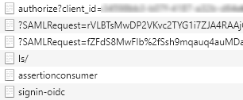

Solution Package
A collection of packages and tools for developers to support rapid, robust and extensible development of applications and services within DNV.
Some of the supported features include:
Authentication
Get started with DNVGL.OAuth.Web
DNVGL.OAuth.Web is a .NETCore library for developers to simplify the work of setting up OpenId Connection authentication (OIDC) such as Veracity or Azure AD B2C for ASP.NET Core web project.
Package Install
Ensure you have configured to package NuGet Package Source or find the instructions here.
Package Manager Console
PM> `Install-Package DNVGL.OAuth.Web`
Basic Authentication Usage
To simplify your authentication implementation of Veracity for your ASP.NET Core web project, you need to add 3 blocks of codes to
Startup.cs.- Add namespace reference.
using DNVGL.OAuth.Web;- Add
AddOidcextension method toConfigureServices.
public void ConfigureServices(IServiceCollection services) { ... services.AddOidc(o => { o.Authority = "<Authority>"; o.ClientId = "<ClientId>"; o.ClientSecret = "<ClientSecret>"; o.Resource = "<Resource>"; o.Scopes = new[] { "<Scope>" }; }); ... }- Add
UseAuthenticationandUseAuthorizationextension methods toConfigure.
public void Configure(IApplicationBuilder app, IWebHostEnvironment env) { ... app.UseAuthentication().UseAuthorization(); ... }- Then you could launch your project and access an action in a controller that decorated with
[Authorize], a challenge request will be sent to IDP(Microsoft or Veracity) to start the authentication process, and theHttpContextwill be filled with authentication result.

- A sample project is ready for you to try out: SimpleOidc.
Access Token Cache Usage
If you web project act as an API gateway, you will want to cache users' access tokens to prevent unnecessary token requests. The library uses
MSAL (Microsoft Authentication Library)to manipulate tokens.- Authorization code flow needs to be set to acquire access token, and refresh token is required for MSAL to re-acquire token from IDP if the token exceed its expiration.
public void ConfigureServices(IServiceCollection services) { ... var oidcOptions = new OidcOptions { Authority = "<Authority>", ClientId = "<ClientId>", ClientSecret = "<ClientSecret>", Resource = "<Resource>", Scopes = new[] { "<Scope>", "offline_access" }, // offline_access is required to retrieve refresh_token. ResponseType = OpenIdConnectResponseType.Code }; ... }- To cache the tokens, an implementaion of
IDistributedCachesuch asMemoryDistributedCacheneeds to be added.
public void ConfigureServices(IServiceCollection services) { ... services.AddDistributedMemoryCache(); ... }You can also add
RedisCacheinstead.public void ConfigureServices(IServiceCollection services) { ... services.AddDistributedRedisCache(o => { o.InstanceName = "<InstanceName>"; o.Configuration = "<Configuration>"; }); ... }- Calling
AddDistributedTokenCachewill haveIDistributedCacheattached to MSAL client app behind the scene, and the token acquiring process will be replaced by MSAL client app.
public void ConfigureServices(IServiceCollection services) { ... services.AddDistributedTokenCache(oidcOptions); ... }- Don't forget to add
AddOidcafter what you did previously.
public void ConfigureServices(IServiceCollection services) { ... services.AddOidc(oidcOptions); ... }- A sample project is ready for you to try out: TokenCacheDemo.
OAuth HTTP Client Factory
The
DNVGL.OAuth.Api.HttpClient packageis a .NET library which provides a factory for producing authenticated HttpClients for API integration via OAuth.Developers can use this library to create HttpClient instances which will be pre-authenticated for API requests based on provided configuration.
This package supports two type of credential authentication:
- User credentials - A user may authenticate by providing a username and password via a UI.
- Client credentials - A service or application may provide a client id and secret to silently authenticate.
Package Install
Ensure you have configured to package NuGet Package Source or find the instructions here.
Package Manager Console
PM> `Install-Package DNVGL.OAuth.Api.HttpClient`Basic example
1. Configuration
Setup API http client configuration in
appsettings.jsonfile:{ "ApiHttpClientOptions": [ { "Name": "userCredentialsClient", "Flow": "user-credentials", "BaseUri": "<BaseUri>", "SubscriptionKey": "<SubscriptionKey>" }, { "Name": "clientCredentialsClient", "Flow":"client-credentials", "BaseUri": "<BaseUri>", "SubscriptionKey": "<SubscriptionKey>" "OAuthClientOptions": { "Authority": "<Authority>", "ClientId": "<ClientId>", "ClientSecret": "<ClientSecret>", "Resource": "<Resource>", "Scopes": [ "<Scope>", "offline_access" ], "CallbackPath": "<CallbackPath>" } } ] }The package injects an
IHttpClientFactorywhich is able to provide multiple HttpClients for different purposes. The HttpClients may all be configured through a configuration section in which the individual client configurations are listed with a uniqueNamewhich is used to request HttpClients with the corresponding configurations.The configuration shown above lists 2 HttpClients. The first with name
"userCredentialsClient"is an example of a configuration which would honour the signed in user's credentials for the API for which it makes requests. The second with name"clientCredentialsClient"provides configuration for a client which would be authenticated via the client credential flow with a client id and secret to make requests in an API. This configuration would allow us to request either type of HttpClient by requesting it from from the HttpClientFactory by providing one of the two names:"userCredentialsClient"or"clientCredentialsClient"in the method call to the HttpClientFactory.2. Registration
Call the
ServiceCollectionextension methodAddOAuthHttpClientFactoryto register an instance of theIHttpClientFactoryin to your project in yourStartup.csfile.The below code is retrieving the configuration from the
"OAuthHttpClientOptions"section defined inapsettings.jsonabove.public void ConfigureService(IServiceCollection services) { ... services.AddOAuthHttpClientFactory(Congiuration.GetSection("ApiHttpClientOptions").Get<IEnumerable<OAuthHttpClientOptions>>()); ... }If you require a HttpClient applying the user credential flow you should also include the web authentication (
AddOidc) and token cache handling (AddDistributedMemoryCache) from the DNVGL.OAuth.Web package. Include the NuGet package in your project and call the required methods as below:public void ConfigureService(IServiceCollection services) { ... services.AddDistributedMemoryCache(); ... var oidcOptions = new OidcOptions { Authority = "<Authority>", ClientId = "<ClientId>", ClientSecret = "<ClientSecret>", Resource = "<Resource>", Scopes = new[] { "<Scope>", "offline_access" }, ResponseType = OpenIdConnectResponseType.Code }; services.AddOidc(oidcOptions); ... services.AddOAuthHttpClientFactory(Congiuration.GetSection("ApiHttpClientOptions").Get<IEnumerable<OAuthHttpClientOptions>>()); ... }If you only require HttpClients applying the client credential flow the DNVGL.OAuth.Web package is not required.
3. Request a client
Resolve
IHttpClientFactoryto create user-credential or client-credentialHttpClientto access web API.public class TestController { private readonly IHttpClientFactory _httpClientFactory; public TestController(IHttpClientFactory httpClientFactory) { _httpClientFactory = httpClientFactory; } public User DoSomethingWithSignInUser(string id) { var client = _httpClientFactory.Create("userCredentialsClient"); ... } public Company DoSomethingWithService(string id) { var client = _httpClientFactory.Create("clientCredentialsClient"); ... } }
Security
HTTP Response Security Header
DNVGL.Web.Security provides extension methods to setup http response headers for ASP.NET Core application.
Package Install
Ensure you have configured to package NuGet Package Source or find the instructions here.
Package Manager Console
PM> `Install-Package DNVGL.OAuth.Web`1. Basic Example
public class Startup { //... public void Configure(IApplicationBuilder app, IWebHostEnvironment env) { //... app.UseDefaultHeaders(); //... } }- The package set up below default http response headers.
Key Value X-Xss-Protection 1 X-Frame-Options SAMEORIGIN X-Content-Type-Options no-referrer X-Permitted-Cross-Domain-Policies none Expect-CT enforce, max-age=7776000 Strict-Transport-Security max-age=15552000; includeSubDomains If you have setup your own response headers before using the pacakge to setup default headers. You own reponse headers will be kept.
- The package set up below default csp rule in http response headers.
Key Value default-src 'self' object-src 'self' connect-src 'self' https://dc.services.visualstudio.com script-src 'self' https://www.recaptcha.net https://www.gstatic.com https://www.gstatic.cn font-src 'self' data: https://onedesign.azureedge.net https://veracitycdn.azureedge.net media-src 'self' worker-src 'self' blob: img-src 'self' https://onedesign.azureedge.net https://dnvglcom.azureedge.net https://cdnveracity.azureedge.net frame-src 'self' https://www.google.com https://www.recaptcha.net/ style-src 'self' https://onedesign.azureedge.net If you have setup your own CSP before using the pacakge to setup default headers. You own CSP will be kept.
2. Customize Response Header
The pacakge supports to overwrite the above default setting. This is a code sample to overwrite X-Frame-Options:
public class Startup { //... public void Configure(IApplicationBuilder app, IWebHostEnvironment env) { //... app.UseDefaultHeaders(h=> h.Add("X-Frame-Options", "DENNY")); //... } }3. Customize CSP in Response Header
The pacakge supports to overwrite the above default setting. This is a code sample to overwrite styleSrc:
public class Startup { //... public void Configure(IApplicationBuilder app, IWebHostEnvironment env) { //... app.UseDefaultHeaders(h=> h.ReplaceDefaultContentSecurityPolicy(styleSrc: "'self' 'nonce-123456789909876543ghjklkjvcvbnm'");); //... } }Or extend the above default setting. This is a code sample to extend styleSrc:
public class Startup { //... public void Configure(IApplicationBuilder app, IWebHostEnvironment env) { //... app.UseDefaultHeaders(h=> h.ExtendDefaultContentSecurityPolicy(styleSrc: "'nonce-123456789909876543ghjklkjvcvbnm'");); //... } }4. Skip CSP in Response Header for specific requests.
By default, The package doesn't add csp into respsone for all http requests which url contain '/swagger/'. It supports to overwrite the default skip logic. This is a code sample to skip all request which url contains '/nocsprequired/'.
public class Startup { //... public void Configure(IApplicationBuilder app, IWebHostEnvironment env) { //... app.UseDefaultHeaders(h=> h.SkipContentSecurityPolicyForRequests((req) => req.Path.ToString().ToLowerInvariant().Contains("/nocsprequired/"))); //... } }5. Permissions Policy
Permissions Policy HTTP Header can be provided by your web server / web application in order to improve the security of your visitors and the data they may be accessing on your site.
Standardized Features
Feature Name Description accelerometer The Accelerometer interface of the Sensor APIs provides on each reading the acceleration applied to the device along all three axes. ambient-light-sensor The AmbientLightSensor interface of the Sensor APIs returns the current light level or illuminance of the ambient light around the hosting device. autoplay Controls the ability to have Media (Audio or Video) elements begin playback without user interaction in the current document. When this policy is disabled and there were no user gestures, the Promise returned by HTMLMediaElement.play() will reject with a DOMException. The autoplay attribute on <audio>and<video>elements will be ignored.battery The Battery Status API can be used to defer or scale back work when the device is not charging in or is low on battery. camera Manages access to Camera interfaces (physical and virtual). cross-origin-isolated Cross-origin isolation enables a web page to use powerful features such as SharedArrayBuffer, performance.measureUserAgentSpecificMemory(), high resolution timer with better precision, or the JS Self-Profiling API. This also impacts the "document-domain" permission when set (see below). display-capture A document's permissions policy determines whether any content in that document is allowed to use getDisplayMedia. document-domain Provides access to the deprecated "document.domain[=domain]" setter. When the "document-domain" feature is disabled, the setter will throw a "SecurityError" exception. In cases where crossOriginIsolated or originAgentCluster return true, the setter will do nothing. It is recommended to avoid using the document.domain setter, instead, use postMessage() or MessageChannel objects to communicate across origins in a safe manner. encrypted-media Encrypted Media Extensions provides an API that enables web applications to interact with content protection systems, to allow playback of encrypted audio and video. Provides access to the requestMediaKeySystemAccess() method, a part of the MediaKeys object. execution-while-not-rendered Controls if tasks should execute for nested browsing contexts (eg. iframes) when it has/is not being rendered. execution-while-out-of-viewport Controls if tasks should execute for nested browsing contexts (eg. iframes) when not within the current viewport. fullscreen Determines whether any content in a document is allowed to go fullscreen. If disabled in any document, no content in the document will be allowed to use fullscreen. geolocation The Geolocation API provides access to geographical location information associated with the host device. gyroscope Gyroscope sensor interface to monitor the rate of rotation around the three local primary axes of the device. keyboard-map Controls whether the getLayoutMap() method is exposed on the "Keyboard" interface. magnetometer Magnetometer sensor interface to measure a magnetic field in the X, Y and Z axis. microphone Manages access to Microphone interfaces (physical and virtual). midi Musical Instrument Digital Interface (MIDI) protocol enables electronic musical instruments, controllers and computers to communicate and synchronize with each other. navigation-override Enables the page author to take control over the behavior of spatial navigation, or to cancel it outright. Spatial navigation is the ability to move around the page directionally which can be useful for a web page built using a grid-like layout, or other predominantly non linear layouts. More often this is used in browsers on devices with limited input control, such as a TV. payment Allow merchants (i.e. web sites selling physical or digital goods) to utilise one or more payment methods with minimal integration. picture-in-picture Allow websites to create a floating video window always on top of other windows so that users may continue consuming media while they interact with other content sites, or applications on their device. This item controls whether the request Picture-in-Picture algorithm may return a SecurityError and whether pictureInPictureEnabled is true or false. publickey-credentials-get Determines whether any content in the allowed documents is allowed to successfully invoke the Web Authentication API. If disabled in any document, no content in the document will be allowed to use the foregoing methods, attempting to do so will return an error. screen-wake-lock A screen wake lock prevents the screen from turning off. Only visible documents can acquire the screen wake lock. sync-xhr The sync-xhr policy controls whether synchronous requests can be made through the XMLHttpRequest API. If disallowed in a document, then calls to send() on XMLHttpRequest objects with the synchronous flag set will fail, causing a NetworkError DOMException to be thrown. usb The WebUSB API provides a way to safely expose USB device services to the web. Controls whether the usb attribute is exposed on the Navigator object. web-share Exposes the navigator.share() API where supported, which shares the current URL via user agent provided share to locations. xr-spatial-tracking The WebXR Device API provides the interfaces necessary to enable developers to build compelling, comfortable, and safe immersive applications on the web across a wide variety of hardware form factors. Proposed Features
Feature Name Description clipboard-read Read from the device clipboard via the Clipboard API clipboard-write Write to the device clipboard via the Clipboard API gamepad Determines whether any content in that document is allowed to access getGamepads(). If disabled in any document, no content in the document will be allowed to use getGamepads(), nor will the "gamepadconnected" and "gamepaddisconnected" events fire. speaker-selection Determines whether any content in a document is allowed to use the selectAudioOutput function to prompt the user to select an audio output device, or allowed to use setSinkId to change the device through which audio output should be rendered, to a non-system-default user-permitted device. Experimental Features
Feature Name Description conversion-measurement Click Through Attribution Reporting. To enable this, use the Chrome command line flag --enable-blink-features=ConversionMeasurement focus-without-user-activation Helps control the use of automated focus in a main frame or <iframe>. The proposed feature provides a means for developers to block the use of automatic focus in nested contents.hid Allow a web page to communicate with HID devices (Human Interface Device) idle-detection Allow usage of the IdleDetector interface to better detect if a user is at their device, instead of trying to identify if a user has just become inactive, such as left window open, screen saver activated, screen turned off, changed tabs or changed applications. interest-cohort Federated Learning of Cohorts (FLoC) is a new way that browsers could enable interest-based advertising on the web. A site should be able to declare that it does not want to be included in the user's list of sites for cohort calculation. serial Provide direct communication between a web site and the device that it is controlling via a Serial port. To enable this, use the Chrome command line flag --enable-blink-features=Serial sync-script Unknown - No information currently available. To enable this, use the Chrome command line flag --enable-blink-features=ExperimentalProductivityFeatures. trust-token-redemption This API proposes a new per-origin storage area for “Privacy Pass” style cryptographic tokens, which are accessible in third party contexts. These tokens are non-personalized and cannot be used to track users, but are cryptographically signed so they cannot be forged. window-placement Proposal to provide additional informatiion for Multi-Screen Window Placement. vertical-scroll Vertical scroll policy is a feature introduced to assist websites in blocking certain embedded contents from interfering with vertical scrolling. Stopping a user from vertically scrolling the page might be a frustrating experience. 5.1 Customize Permissions Policy
Customize Permissions Policy in HTTP Header
public class Startup { //... public void Configure(IApplicationBuilder app, IWebHostEnvironment env) { //... app.UseDefaultHeaders(h=> { var policy = new PermissionsPolicy(); policy.Feature(FeatureNames.Camera).Disable(); policy.Feature(FeatureNames.Fullscreen).Enable(); policy.Feature(FeatureNames.Geolocation).Enable().Self(); policy.Feature(FeatureNames.Usb).Enable().Custom("https://www.dnv.com"); policy.Feature(FeatureNames.Microphone).Enable().Self().Custom("https://www.google.com"); h.Add(PermissionsPolicy.Key, policy.ToString()); }); //... } }5.2 Enable all Permissions Policy
Enable all Permissions Policy in HTTP Header
public class Startup { //... public void Configure(IApplicationBuilder app, IWebHostEnvironment env) { //... app.UseDefaultHeaders(h=> h.EnableAllPermissionsPolicyForSelf()); //... } }5.3 Disable all Permissions Policy
Disable all Permissions Policy in HTTP Header
public class Startup { //... public void Configure(IApplicationBuilder app, IWebHostEnvironment env) { //... app.UseDefaultHeaders(h=> h.DisableAllPermissionsPolicy()); //... } }User Management and Authorization
DNVGL.Authorization.UserManagement.ApiControllers provides restAPIs to manage user, role and company. It also provides mechanisms to authorize API endpoints. Go through Overview to understand the logic behind the package. Check out Demo Projects.
Prerequisites
PM>
Install-Package DNVGL.Authorization.UserManagement.ApiControllersPM>
Install-Package DNVGL.Authorization.UserManagement.EFCoreBasic Usage
This simple example will show you the minimum steps to setup user management and authorization in a ASP.NET Core project. The example uses SQL Server as database and Veracity authentication (Azure AD B2C).
1. register user management module in ASP.NET core project.
PM>
Install-Package Microsoft.EntityFrameworkCore.SqlServerpublic class Startup { //... public void ConfigureServices(IServiceCollection services) { //... services.AddUserManagement().UseEFCore(new EFCoreOptions { DbContextOptionsBuilder = options => options.UseSqlServer(@"Data Source=.\SQLEXPRESS;Initial Catalog=UserManagement;Trusted_Connection=Yes;") }); //... } public void Configure(IApplicationBuilder app, IWebHostEnvironment env) { //... //Put UseRouting or MapControllers before UseAuthentication and UseAuthorization //app.MapControllers(); app.UseRouting(); app.UseAuthentication().UseAuthorization(); //... //... //The following code is required if app.UseRouting() is used instead of app.MapControllers(); app.UseEndpoints(endpoints => { //... endpoints.MapDefaultControllerRoute(); }); //... } }2. Create tables in database
Find and execute
NewTableScript.sqlwhich is located at the content directory once you imported the package in your project.3. Create a super admin in Table -
Users.The following is sample. | Id | Email | FirstName | LastName | VeracityId | SuperAdmin | Active | Deleted | |--|--|--|--|--|--|--|--| | 1 | email | first name | last name | veracity id | 1 | 1 | 0
4. Generate Swagger api documentation (Optional)
NOTE: This step is optional. You can generate API docs in your own way. The following code has dependency on Nuget package -
Swashbuckle.AspNetCore. Additionaly, you will get more explanation if you setapidocs/DNVGL.Authorization.UserManagement.ApiControllers.xml's Copy to Output Directory as Copy Always.public class Startup { //... public void ConfigureServices(IServiceCollection services) { //... services.AddControllers(); services.AddSwaggerGen(c => { // swagger documentaion group for User Management. c.SwaggerDoc("UserManagement", new OpenApiInfo { Title = "User Management", Version = "v1" }); // swagger documentaion group for your system. c.SwaggerDoc("WebAPI", new OpenApiInfo { Title = "Web API", Version = "v1" }); c.TagActionsBy(api => { if (api.GroupName != null) { return new[] { api.GroupName }; } var controllerActionDescriptor = api.ActionDescriptor as ControllerActionDescriptor; if (controllerActionDescriptor != null) { return new[] { controllerActionDescriptor.ControllerName }; } throw new InvalidOperationException("Unable to determine tag for endpoint."); }); c.DocInclusionPredicate((name, api) => { if (name == "UserManagement") return api.GroupName != null && api.GroupName.StartsWith("UserManagement"); else return api.GroupName == null; }); var xmlFile = $"DNVGL.Authorization.UserManagement.ApiControllers.xml"; var xmlPath = Path.Combine(AppContext.BaseDirectory, xmlFile); if (File.Exists(xmlPath)) c.IncludeXmlComments(xmlPath); }); //... } //... public void Configure(IApplicationBuilder app, IWebHostEnvironment env) { //... app.UseSwagger(); app.UseSwaggerUI(c => { c.SwaggerEndpoint("/swagger/UserManagement/swagger.json", "User Management API v1"); c.SwaggerEndpoint("/swagger/WebAPI/swagger.json", "Web API v1"); }); //... } }5. Explore user management APIs
Build and Run your project.
Open swagger in Browser
6. Define permissions
Define permissions by implementing interface -
IPermissionMatrix. The following code defined two permissions.public class PermissionBook : IPermissionMatrix { public enum WeatherPermission { //... [PermissionValue(id: "8", key: "ReadWeather", name: "Read Weather", group: "Weather", description: "ReadWeather")] ReadWeather, [PermissionValue(id: "8", key: "WriteWeather", name: "Write Weather", group: "Weather", description: "WriteWeather")] WriteWeather, //... other permissions } }7. Authorize API with permissions
Decorates API actions with permission.
[HttpGet] [PermissionAuthorize(WeatherPermission.ReadWeather)] public IEnumerable<WeatherForecast> Get() { //... api logic }Recommended content
Something you need to know before using the package to handle user management and authorization.
Integration with ASP.NET Core's Role-based authorization ✓
Integrate user management module with Role-based authorization in ASP.NET Core. In this way, you are allowed to authorize API with asp.net core's
[Authorize(Roles = "****")].Guidance for different databases
Use Azure CosmosDB as database
User other databases.
The package can use all database engines supported by EF Core 5.0+. Here is a list - EF Core 5.0 Database providers
Guidance for configuration
Guidance for customization
Extend Data model - Company, Role, User
Replace EF Core with your own data access
Guidance for access control ✓
Resource access control guide you to control access on resource of company.
Guidance for defining premissions outside souce code
Secrets Manager
The
DNV.SecretsManagerpackage is a command line tool for managing secrets from the Azure KeyVault or Azure DevOps Variable Groups.This tool allows secrets to be downloaded and uploaded as structured JSON files, meaning secrets may be uploaded in structured collections where previously they might have been maintained individually.
What it does
Given a large collection of key vault secrets in an Azure Key vault such as those shown below:

The secrets manager tool could be executed with a command:
secretsmanager keyvault -d -s <keyvault-url> -f output-file.jsonThe resulting
output-file.jsonwould look like:{ "Account": { "BaseUrl": <secret value> }, "Company": { "ApiKey": <secret value>, "Authority": <secret value>, "BaseUrl": <secret value>, "ClientId": <secret value>, "ClientSecret": <secret value>, "Resource": <secret value> }, "Customer": { "ApiKey": <secret value>, "Authority": <secret value>, "BaseUrl": <secret value>, "ClientId": <secret value>, "ClientSecret": <secret value>, "IsApiKeyOnly": <secret value>, "Resource": <secret value> }, "Emailer": { "BaseUri": <secret value>, "FunctionKey": <secret value> ...Conversely, an input json file (
input-file.json) could be uploaded to an Azure Key vault by executing a command:secretsmanager keyvault -u -s <keyvault-url> -f input-file.jsonHierachy
The secrets manager assumes a convention where the parent-child relationship between entities in a hierarchy are expressed with a
--delimeter.In practice this means: to express that
Companyis the parent ofApiKeya key would be namedCompany--ApiKey, if there exists multiple children to a parent they would be aggregated in to a single parent as may be seen in the result above with keys:Company--ApiKey,Company--AuthorityandCompany--BaseUrletc. Parent-child relationships may extend to far greater depth than the example given.Arrays
It is also possible to include arrays of data in your configuration. To express a collection of values in an array the indexes should be included explicity declared in place of the child name. For example, an array may be expressed with a collection of the following keys:
Names--0,Names--1,Names--2which would result in the following JSON:{ "Names": [ <secret value>, <secret-value>, <secret-value> ] }
Useage
secretsmanager <command> [<args>] Commands: keyvault Download or upload secrets from/to Azure Keyvault variablegroup Download or upload secrets from/to Azure Keyvault
Key vault command
secretsmanager keyvault [-h | --help] -d | --download -u | --upload | -c | --clear -s | --url <url> -f | --filename <filename>Options
-h | --helpPrints the synopsis of commands and options available.
-d | --downloadRequests the secrets to be downloaded from the specified source to a JSON file.
-u | --uploadRequests that a provided JSON file be uploaded to a specified source.
-c | --clearDeletes all secrets from the specified source.
-s | --url <url>Provide the URL to the keyvault.
-f | --filename <filename>Specify the file to which you would like to download to or upload from.
Variable group command
secretsmanager variablegroup [-h | --help] -d | --download -u | --upload | -c | --clear -s | --base-url <base-url> -o | --organization <organization> -p | --pat <pat> -g | --group-id <group-id> -f | --filename <filename>Options
-h | --helpPrints the synopsis of commands and options available.
-d | --downloadRequests the secrets to be downloaded from the specified source to a JSON file.
-u | --uploadRequests that a provided JSON file be uploaded to a specified source.
-c | --clearDeletes all secrets from the specified source.
-s | --base-url <base-url>Provide the base URL to the Azure DevOps.
-o | --organization <organization>Provide the organization under Azure DevOps to which a variable group belongs.
-p | --pat <pat>Specify the Person Access Token for authentication.
-g | --group-id <group-id>Specify the id of the variable group you would like to download from or upload to.
-f | --filename <filename>Specify the file to which you would like to download to or upload from.
Integration
Veracity - My Services API v3 Clients
Packages from the
DNVGL.Veracity.Services.Apinamespace provide lightweight .NET clients for Veracity My Services API v3 built on top of packages from the Solution Package.These packages allow developers to query and manipulate data from My services including user profiles, service profiles, notification messages, company profiles, admin roles and subscriptions.
View Points
As a client to API v3, the package is divided in to the following view points: | Name | Description | Supported authentication | |--|--|--| | Directory | Allows fetching and updating resources without a focus on a specifc user or service resource. Recommended for core platform applications. | Client credentials | | My | Allows fetching information and making requests for a user authenticated by user credential flow. | User credentials | | This | Allows manipulation and retrieval of information related to a service where an application is authenticated as a service owner. | Client credentials |
Getting started
Package Install
To install any package from the Solution Package collection, the package feed should be included in your nuget package sources:
This may be added in Visual Studio by navigating to Tools > NuGet Package Manager > Package Manager Settings An Options window will appear, select the Package Sources node on the left hand pane the click the
 button, provide a Name and enter the Source below:
button, provide a Name and enter the Source below:https://dnvgl-one.pkgs.visualstudio.com/_packaging/DNVGL.SolutionPackage/nuget/v3/index.json
Click OK to complete.
One done it will be possible to add any of the NuGet packages outlined in this documentation to your projects via the Package Manager in visual studio or via the Package Manager Console.